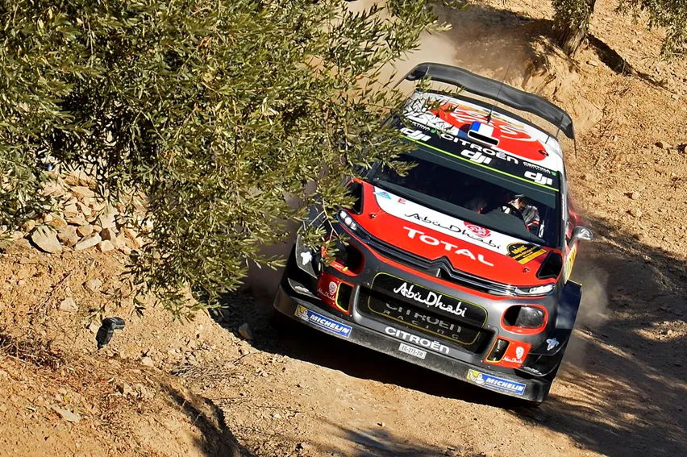
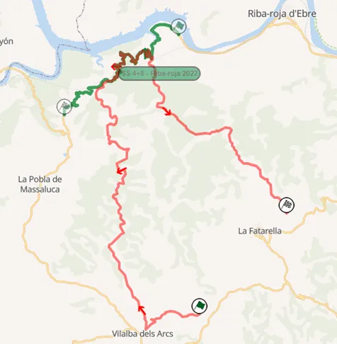
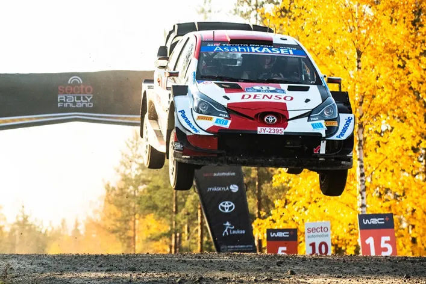
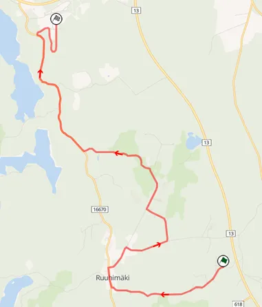
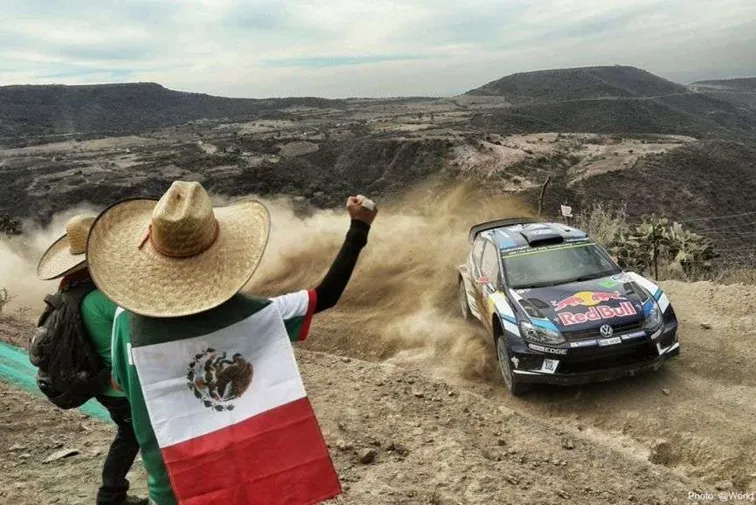
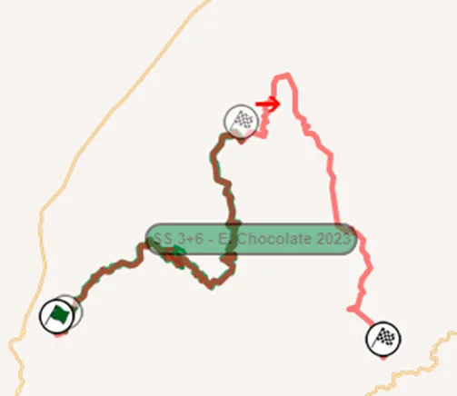
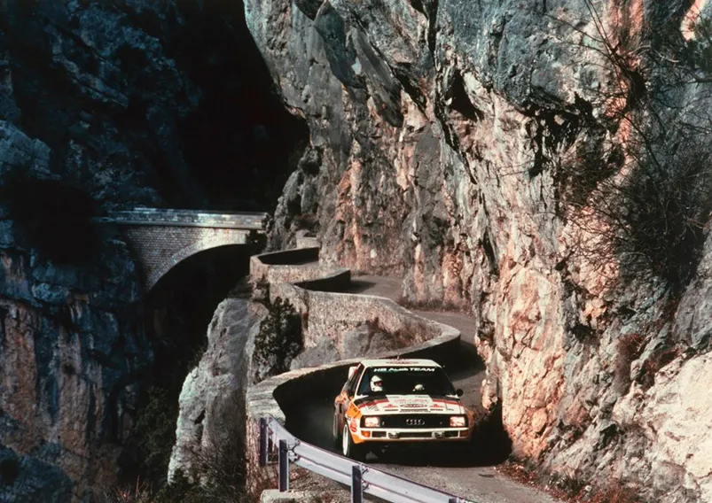
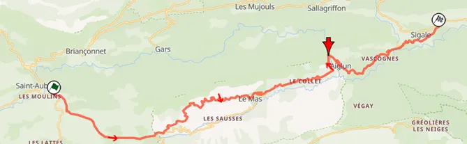
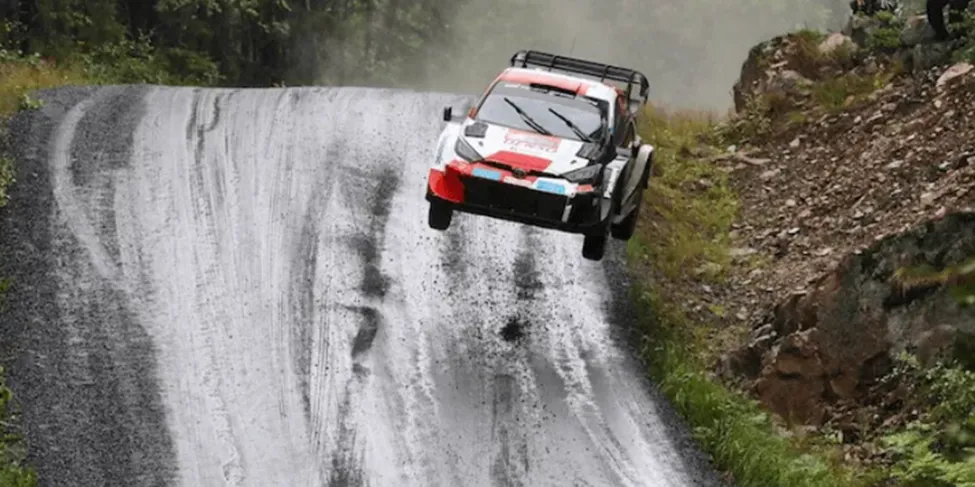
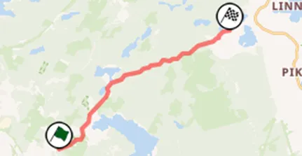

Top 30 Stages in WRC History: 16-20
The poll is closed, and the results are ready to be announced!
We asked you for your favorite WRC stages and you had your say. Each voter selected 15 stages out of a pool of 100, and the 30 stages that had the most votes, combined with our experts’ ratings made it to our list. This was a collaboration between us and Antti from itgetsfasternow.com, this list wouldn’t have been possible without him, so please go check his blog. He will have his own unique post based on this list when all the stages are revealed.
Throughout this month we’ll be going through the results, let's see what's special about these 5 stages, as we we make it to halfway of the list:
20 – Terra Alta – Rally Catalunya

Terra Alta comes in at number 20. This stage was first used when Catalunya switched to a mixed-surface event in 2010 and was used in all of the years up to 2019, after which Catalunya switched back to being a full tarmac event. Terra Alta is a monster 38km stage consisting mostly of narrow rough gravel roads. What sets it apart from the rest is that it has a 7km stretch of tarmac! Terra Alta uses parts of the well-known Riba-Roja tarmac stage, and the drivers had the unique challenge of negotiating those tarmac parts on gravel tyres and a gravel setup, which was often something that set drivers apart on this stage.
Onboard of the Stage
Famous moments include Sebastien Loeb going faster than everyone and leading after Day 1 in 2019, Ken Block’s crash in 2018, Sebastien Ogier going fastest and snatching the lead from Latvala in 2015 and Jari Matti Latvala retiring because of an oil leak in 2017.

Terra Alta and Riba-Roja. The shared part is the tarmac section of the stage.
19 – Ruuhimaki – Rally Finland

Ruuhimaki is a Rally Finland classic. This jump-filled stage was first used back in 1967 and has rarely been absent from the Rally Finland itinerary since. In fact, Ruuhimaki has only been absent thrice in 50 years, namely in 1986, 2010, and this year, 2023. Ruuhimaki has also been featured 9 times as the rally’s shakedown. It’s most known for its series of jumps at the end of the stage, with a massive man-made jump also present since 2018, since when the stage has been the power stage of the rally. If you want to learn more about the history of Ruuhimaki, you can check Antti's post about this stage.
Onboard of Ruuhimaki.
Famous moments include Adrien Fourmaux’s massive jump from 2021, Sebastien Ogier’s jump in 2019, Thierry Neuville crashing out of the Shakedown in 2015, Kankkunen’s famous “black, round, Pirelli” interview from 1999, and Ogier and Latvala’s showdown for the rally win in 2014.

Map of Ruuhimaki
18 – El Chocolate – Rally Mexico

El Chocolate is a name that rally fans first heard in 2013. But despite the name “El Chocolate” not appearing in an itinerary until the 9th version of Rally Mexico, parts of it have been used since the inaugural event back in 2004. Named after the colour of the gravel in the area, El Chocolate has had its fair share of different layouts through the years, but all of them were equally long and challenging. In 2016 and 2017, it had a 54km layout! This stage is slow, rough, and technical. One of the most difficult of an already tricky Rally Mexico.
Onboard from El Chocolate
Famous moments include all 3 M-Sport Pumas going out of the rally in 2023, Esapekka Lappi’s car catching fire after the stage in 2020, Teemu Suninen and Esapekka Lappi both crashing out in 2018, Jari Matti Latvala going faster than everyone on both passes in 2016 (32 seconds gained) and Andreas Mikkelsen going off from 2nd in 2014.

The 2023 layout, which is the most commonly used one, and the monster 54km version of El Chocolate
17 – Aiglun – Rally Monte Carlo

There is no stage that has featured in the WRC under that name. Yet if you mention Aiglun to a rally nerd, they’ll most certainly know what stage you are talking about. This very narrow mountain pass was first used in 1985 as part of the St Auban stage and continued to be used regularly until 2006. The Aiglun section is a narrow road named after the village near said road. This piece of road goes through two mountain tunnels and after passing through a very narrow stone bridge, there’s a stretch of a very narrow, twisty road that one side has the rockface of a mountain, and on the other has a cliff drop.
Stage of the 1991 stage Col de Bleine. The Aiglun section starts roughly at 16:30
Famous moments include Armin Schwarz rolling out of the rally and Sebastien Loeb winning the stage in the dark in 2005, Didier Auriol going 22 seconds faster than everyone in 1993 and snatching the lead away from Delecour, Toni Gardemeister winning the opening stage and leading the rally and Gilles Panizzi crashing on the second pass in the icy conditions of 2001 and Marcus Gronholm crashing out of the lead in 2003.

A map of the 1985 St Auban stage. The red arrow shows the Aiglun section.
16 – Savo – Rally Finland


To the south-east of Tampere, lies a 1000 Lakes classic. Despite not having been included in a Rally Finland since 1995, Savo is still considered one of the best stages to feature in the 1000 lakes by Finnish fans. Savo is known for its very nice flow and many crests, and is a stage that requires precision and commitment to get right. Savo isn’t your typical Rally Finland stage, there aren’t many straights and flat-out sections, and the stage reminds me more of stages that you’d find in New Zealand.
Kalle Rovanpera did Savo as preparation for Rally Finland this year.
Famous moments include Didier Auriol crashing out of the rally in 1990 and in 1989 the first corner caught out a lot of privateers and it gave a stone on the inside the nickname “the million dollar stone”.

The map of Savo. The stage has remained virtually unchanged through the years.
Written by Dimitris Theodorou in collaboration with Antti from itgetsfasternow.com


Comments